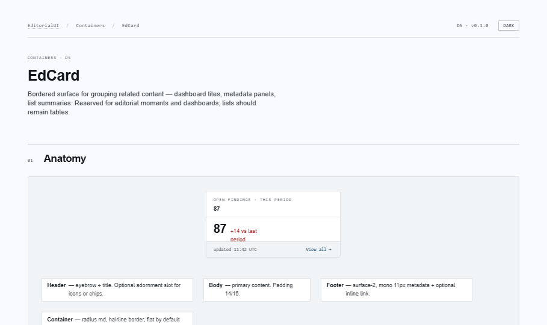
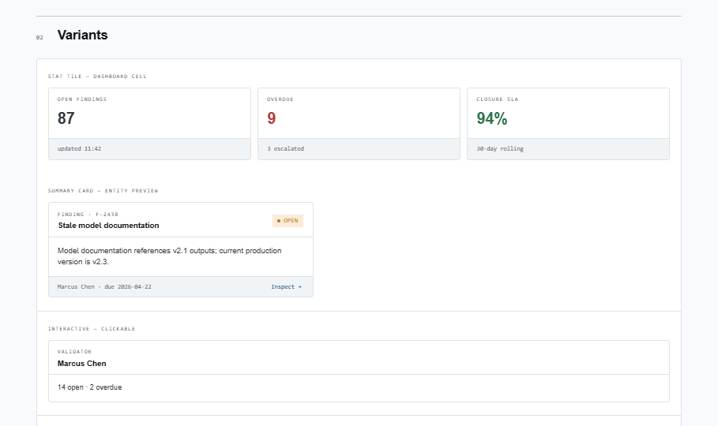
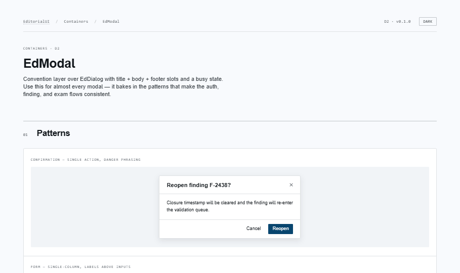
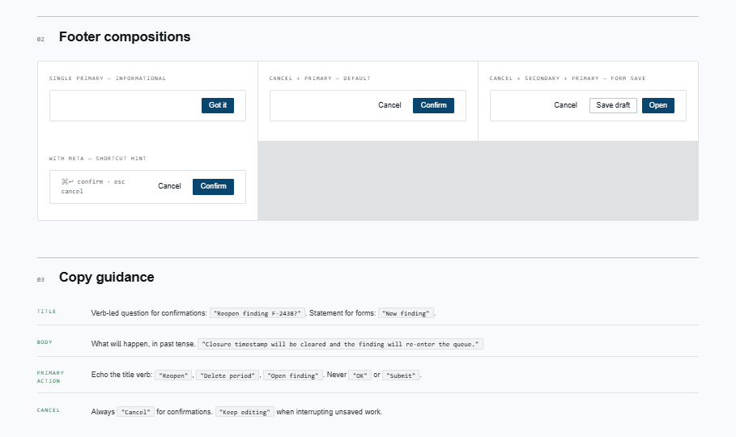
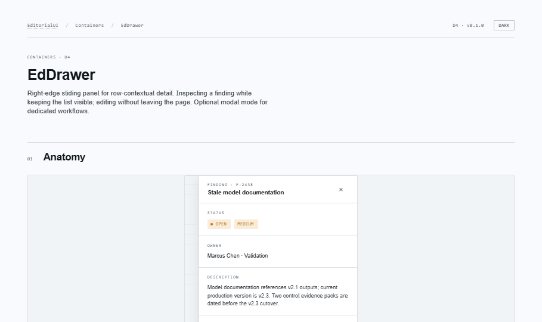
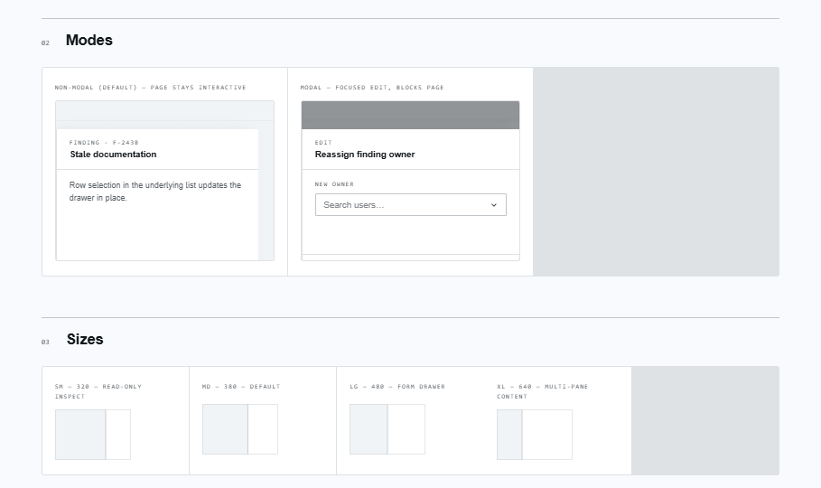
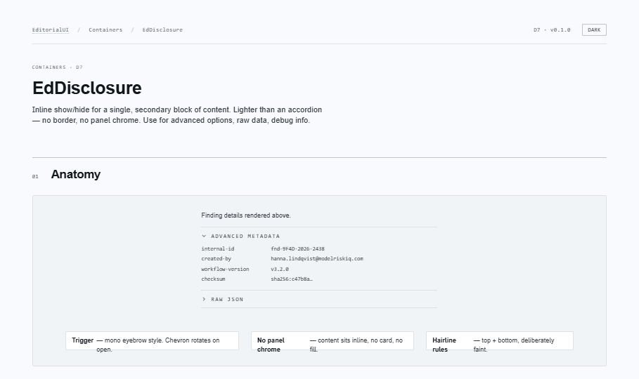
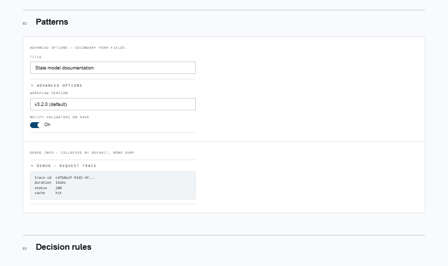
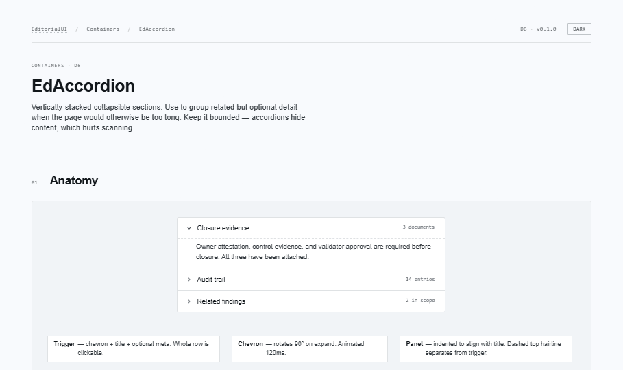
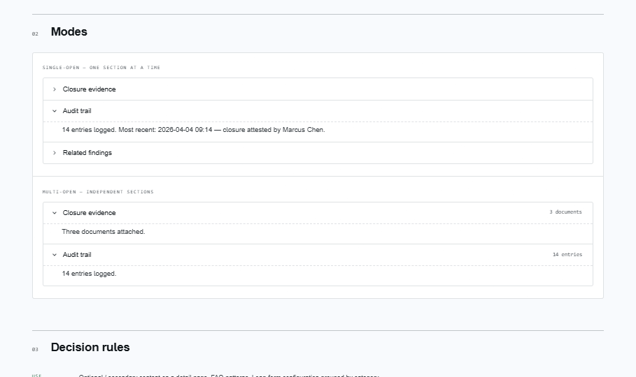

EditorialUI · Implementation
The surfaces that hold other content: cards, the modal convention layer,
the contextual drawer, and the two collapsible primitives. Builds directly
on Bundle 5's EdDialog.
apostlerisk. Assumes Bundles 1–5 merged; covers the EdModal→EdDialog prerequisite, the EdDrawer/EdSidePanel naming, and the non-modal drawer default.
open ↗
Naming: the roadmap called the side panel EdSidePanel;
the design spec (D4) names it EdDrawer. The implementation follows the
spec — EdDrawer is canonical, EdSidePanel is exported as an
alias so either import works.
Bordered surface for grouping — dashboard tiles, metadata panels, entity previews. Flat by default (border is the affordance; shadow only on interactive hover). Variants default / flat / ghost; asChild + interactive make it a real button/link. Not a table substitute.


Convention layer over EdDialog. Title/subtitle/body/footer + footerMeta + a busy state (aria-busy, frozen body, live-region status, auto-guarded). Use for almost every modal. Copy: verb-led title, primary action echoes the verb — never "OK".


Right- or left-edge sliding panel for row-contextual detail. Non-modal by default (page stays interactive, updates in place); modal adds overlay + focus trap. Four sizes, preventClose guard, EdDrawerSection for labelled groups. Encode open state in the URL at the call site.


Inline show/hide for a single secondary block. Lighter than an accordion — no border, no panel chrome, just a mono trigger + rotating chevron. For advanced options, raw data, debug dumps. For 2+ blocks use EdAccordion.


Vertically-stacked collapsible sections. Single-open (default, collapsible) or multi-open. Items as a data array with optional mono meta (counts, status). Arrow-key nav + roving focus from Radix. For sibling views prefer EdTabs (Bundle 7).


@radix-ui/react-accordionEdAccordion — the one new install.@radix-ui/react-dialogEdDrawer — already present from Bundle 5.@radix-ui/react-slotEdCard asChild — already present from Bundle 1.EdDialog (Bundle 5)Prerequisite — EdModal imports it. Bundle 5 must be merged first.<button>/<a> via asChild, never a <div onClick>.EdModal bakes in title/body/footer + busy so auth, finding, and exam flows stay consistent. Busy keeps cancel live.modal for focused edits.EdTabs, EdBreadcrumb, EdMenu,
EdContextMenu. EdAccordion points users to
EdTabs for sibling views; EdMenu will reuse the
listbox + popover patterns from Bundle 3's combobox work.